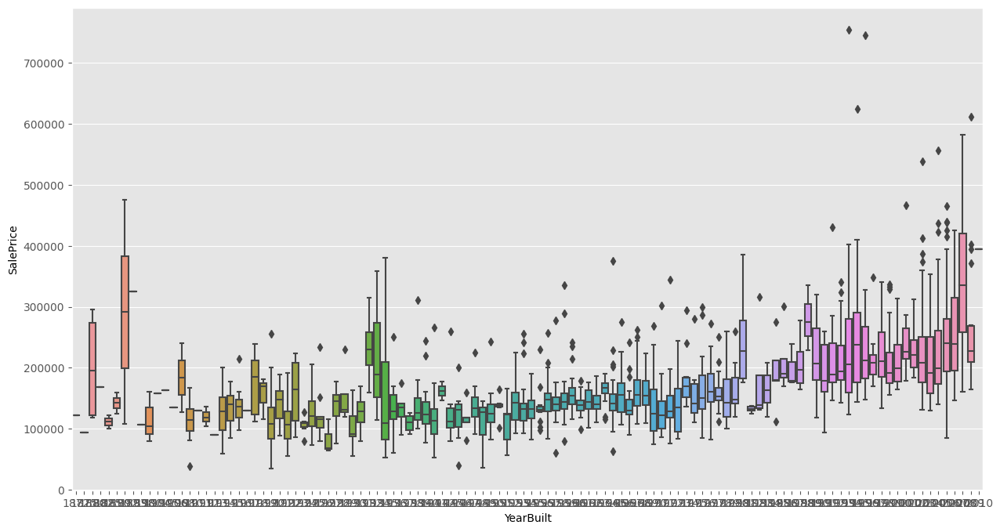

AI 系统速通笔记之数据预处理
文章目录
本文的标题非常不负责任，概 AI 基础这门课本身的课程内容极具争议的缘故。
拿到了数据后要先进行一些预处理才会拿去做模型训练。这里面的门道比想象中多。
概述
首先我们理清数据预处理的流程，用到的比较具体的技术和方法会在下面专门讲。
首先，我们需要清除一些错误的数据。一个比较有效的统计方法是使用箱线图来去除极端的值。
有些数据的特征可能含有缺失项，如果确实不具备参考价值可以直接删除（pandas 中可以调用 dropna）。但是如果要利用含有缺失项的特征，我们需要适当给予补充修复。常见的做法是使用已有数据平均值/中位数/默认值/相邻的值补全，或者采用某种公式插值（线性插值，例如按照时间排序的温度信息）。
接下来我们需要做一些数据转化。对于实数特征我们可以按照某种公式进行规范化，对于图片我们可以裁剪、压缩等等，对于文本数据可以做分词和词的分类（英文单词的不同变形）等等。
在这之后，我们可以使用特征工程的一些方法来筛选、简化、合并特征，使得之后的（深度）学习过程更加容易。为此我们主要进行特征选择，很多特征选择的方法也会对应特征的合并或者训练上的调整。
箱线图1
箱线图主要用于检测数据中的离群值。
设表示所有数值的中位数，表示小于这部分值的中位数（第一四分位数），为大于这部分值的四分位数（第二四分位数）。就是箱子的范围。
称为四分位间距 Interquartile range。则就是线段的范围。
落在线段之外的值就是离群值（outlier）。下面就是本次作业的房子数据各个特征的箱线图，可以发现确实有许多离群值：

用到的库是 python 的 seaborn。
信息熵
首先我们给出信息熵的定义：对于随机变量，和其服从的概率分布，定义
信息熵可以理解为系统内不同事件信息量的期望。
对于两个随机变量和其联合分布，我们可以定义联合熵：
它描述一个联合分布的不确定程度。此外，已知时的不确定程度可以用条件熵表征：
条件熵与联合熵的关系是，可以通过推导证明。有了熵，我们就可以定义互信息
结合一下条件熵与联合熵的关系，可以发现，可以画出直观易懂的维恩图。
决策树
决策树可以将一组数据按照其特征进行分类，其中
- 根节点包含所有数据
- 每个非叶子节点中的数据会按照某个属性进行分类，将分类的数据放在子节点中
- 每个叶子节点对应决策结果
要构建决策树，主要考虑的问题是选择什么属性来划分数据最优。直观上我们希望划分后尽量是“均分”的，而不是所有数据归为一类。为了衡量划分的优秀性，我们可以结合上文提到的信息熵。
划分准则
我们可以使用信息增益来度量划分的优秀性。为此首先我们要度量数据集在分类标签集下的纯度：
其中表示标签为的数据集合，自然表示划分到类别所占的比例。越高意味着样本纯度越低。
特征对的信息增益定义为
单从实现的角度，可以不管。后面的和式描述的是特征的每个取值下样本的纯度。显然纯度越有利于分类，因此我们取一个负号在前面。
信息增益还可以理解为属性与标签之间的互信息。
但是信息增益的问题是如果的取值过多，每个取值下的数据过少，这样的分类效率和泛化性都不高。
我们还可以采用增益率作为划分准则：
这样就缓解了上述问题。
另一种划分准则是基尼指数（Gini index，也称 Gini Impurity）：
特征对的 Gini 指数为
越小，意味着以特征划分后信息量越少，说明这种划分对提升数据纯度的帮助越大。
事实上我们可以类比信息增益定义 Gini Decrease 为。
回归树
上面描述的都是利用离散的特征对数据分类的问题。
如果特征是连续的值，我们可以将其按照某种分度离散化。
如果目标是对数据的标签做回归分析（例如房价预测），我们只需要稍微魔改一下决策树就能解决这个问题。为此我们引入回归树。
回归树与决策树结构相同，但是对于集合纯度我们使用估计。设表示数据集的方差，，那么最优特征定义为
决策树和回归树在 sklearn.tree 中均有对应的 API 可以调用。
数值规范化
常见的规范函数有
线性映射为之间的值（min-max normalization）：
映射成均值为，方差为的数据分布（z-score normalization）：
十进制缩放（decimal scaling）：
其中为使得的最小的。
对数缩放（log scaling）：
特征选择
特征选择解决问题是：当可用的特征过多时，选择其中最合适的作为子集，最大化训练模型的效率。首先我们可以使用 Pearson 相关系数、互信息、Gini index 等方法来判断两个特征的相关程度。我们也可以将特征选择的过程和模型训练结合到一起，也就是嵌入法。还可以将特征选择看成搜索问题。
Pearson 相关系数
中学知识：
在 scipy 中有对应的 API。
嵌入法
对于一个回归问题，以线性回归为例，特征可以抽象为维向量，回归目标为。对于多个数据，目标函数是。使用的模型是。
而 Lasso 方法则在线性回归的基础上对的值进行正则化：
在正则化下，大部分系数会是一个接近的数字，剩下的绝对值很大的系数对应的是重要的特征。这种方法统称嵌入法。
值得一提的是，Ridge2 回归也使用了相似的思想，即在最小化损失的同时对参数进行规范化，如果要用它做特征选择可能会需要做一些矩阵运算。
迭代法
如果将特征选择看成搜索问题，暴力搜索有种情况，十分不优秀。
此时我们可以使用贪心的方法，从空集开始每次加入一个特征，并计算模型的性能提升程度（递增）；或者从全集开始每次减少一个特征，并计算模型的性能降低程度（递减）。
Gini Importance3
也称 Mean Decrease in Impurity (MDI)。Gini Importance 的实现方式目前存在争议。这里我们讲的是 sklearn 的实现方法45。
设决策树的结点集合为，表示结点上的数据，表示上用于分割的特征。那么特征的 Gini Importance 定义为
Permutation Importance
也称 Mean Decrease in Accuracy (MDA)。
我们可以将数据的某个特征打乱顺序，计算打乱前和打乱后的准确性，那么这个特征的重排重要性就是，以此来估计哪些特征具有保留价值。
在 sklearn.inspection 中有对应的 API。
SHAP6
SHAP 是一个用于特征解释的工具，也可以用于特征选择。
1. https://en.wikipedia.org/wiki/Box_plot ↩
2. https://en.wikipedia.org/wiki/Ridge_regression ↩
3. https://medium.com/the-artificial-impostor/feature-importance-measures-for-tree-models-part-i-47f187c1a2c3 ↩
4. https://scikit-learn.org/stable/modules/tree.html#tree-mathematical-formulation ↩
5. https://github.com/scikit-learn/scikit-learn/blob/108486011b833cef8061615d926e2883941b9123/sklearn/tree/_tree.pyx#L1114 ↩
修订记录
- 2023年5月30日 创建文章